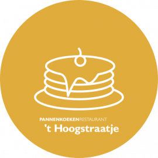
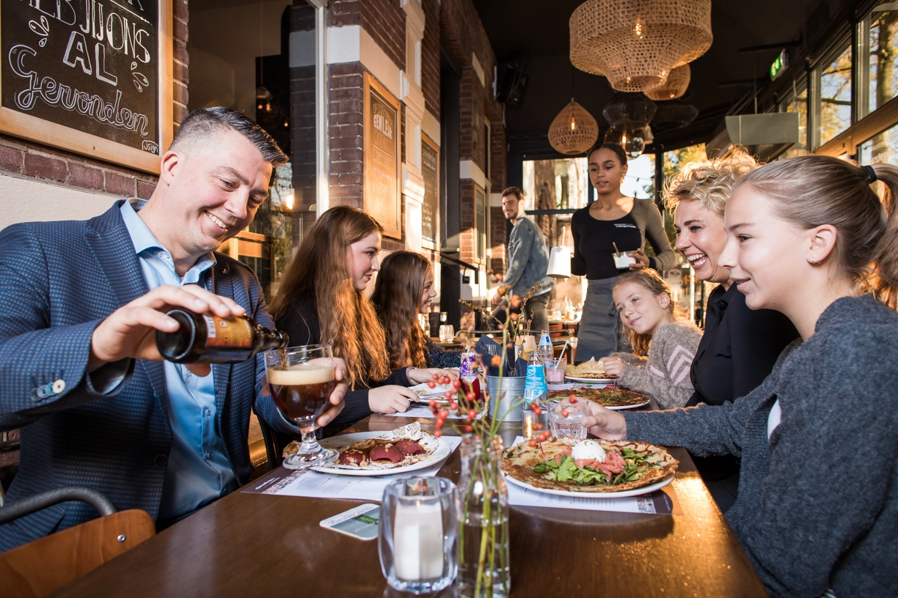
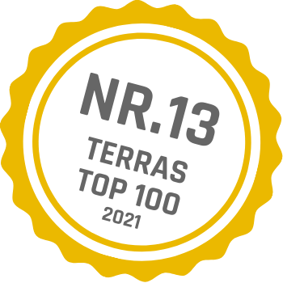
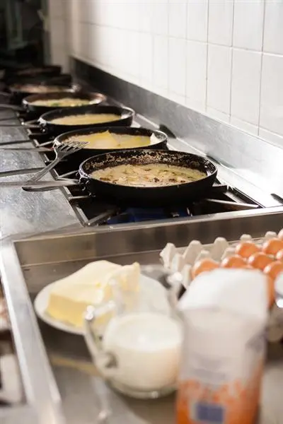
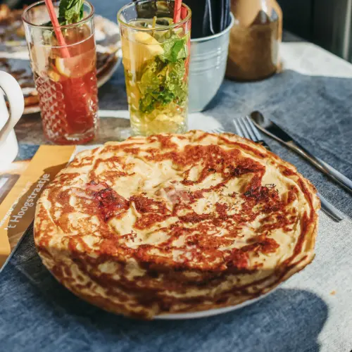
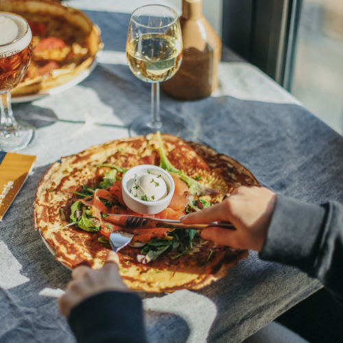
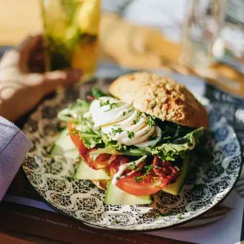
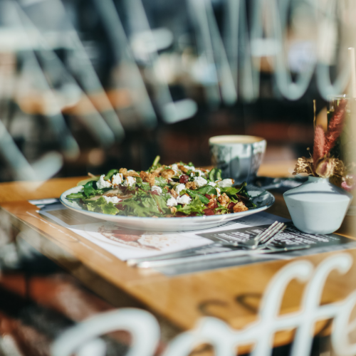
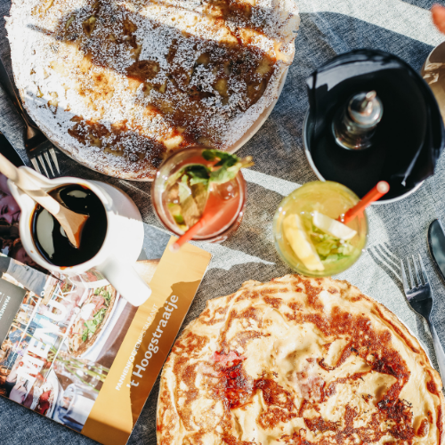
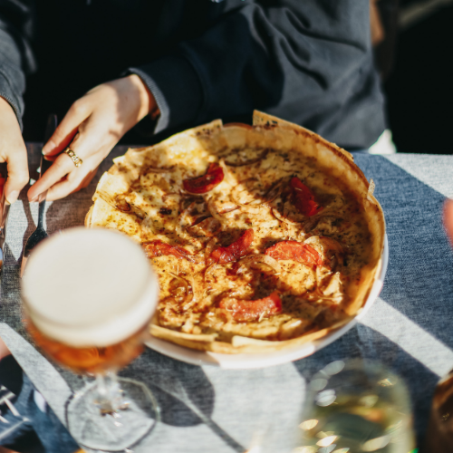

Ambachtelijk bereid
Op de ouderwetse manier gebakken. Geen kant-en-klaar beslag, geen toevoegingen: boter in de koekenpan en op een mooi vuurtje lekker bakken.

Pannenkoekenrestaurant't Hoogstraatje ReserverenPannenkoeken & poffertjes · aan het Valkhofpark
Ambachtelijk gebakken volgens ons familierecept, in een middeleeuws pand in het centrum van Nijmegen. Meer dan 50 pannenkoeken op de kaart, zoet en hartig, en genoeg om te smullen voor de kleintjes.

Beste terras van Nijmegen nr. 13 van NederlandSinds 1991
Ons restaurant in Nijmegen centrum, gelegen aan het Valkhofpark, is de plek om even te ontspannen en te genieten voor jong en oud. 't Hoogstraatje bakt al vanaf 1991 pannenkoeken, in een middeleeuws pand met ruim 135 zitplaatsen.
Zoek je een leuke plek om te lunchen in Nijmegen of wil je lunch afhalen? Ook dan kun je bij ons terecht. Naast pannenkoeken en poffertjes kun je genieten van verse broodjes, frisse salades, een soepje en meer.
Kom binnen en reserveer een tafeltje, of geniet lekker buiten op het grote terras. Ook als het weer wat minder is zit je met een warmtekussentje droog onder de parasols. Bijna het hele jaar door: in de zomer vieren we feest tijdens de Vierdaagse en in de winter toveren we het terras om tot 't Winterstraatje.

Uitgeroepen tot het beste terras van Nijmegen en nummer 13 van Nederland. Trots!

Op de ouderwetse manier gebakken. Geen kant-en-klaar beslag, geen toevoegingen: boter in de koekenpan en op een mooi vuurtje lekker bakken.
Diverse lekkere gerechten op onze kaart, en zelfs een aparte vegan menukaart. Veel pannenkoeken zijn veganistisch te maken.
Een groot deel van onze ingrediënten komt van telers en boeren uit de regio. En lokale leveranciers: appeltaart van Droom, koffie van Peeze en brood van Bakkerij Holland.
Ook voor gasten met een voedselallergie of -intolerantie doen we graag ons best. Lees hoe we dat doen.
We hergebruiken restanten zoveel mogelijk. Onze huisgemaakte tomatensalsa maken we van de topjes en kontjes van de tomaten.
Speelkelder, kleurwedstrijd, spelletjes en kinderfeestjes. En een kindvriendelijk en rookvrij terras #rookvrijegeneratie.
Menukaart
Van traditioneel tot specialiteit, zoet en hartig. Alle prijzen in euro's.
Onze pannenkoeken… zijn ook heel lekker met een bolletje vanille-ijs, een toefje slagroom of een scheut vanillesaus.
Alternatief beslag. Alle pannenkoeken kun je ook in boekweit-meergranenbeslag bestellen (+1.00). Wil je hier een kaaspannenkoek van? Die bakken we dan iets anders dan normaal; vraag ons gerust wat we daarmee bedoelen.
Allergenen. Voor glutenvrije, melkvrije en/of eivrije pannenkoeken hebben we een aparte menukaart. Hiervoor maken we een apart beslag met speciale ingrediënten; daarvoor rekenen we 1.00 extra. Meer over allergie
Pannenkoeken meenemen kan natuurlijk ook. Bel van tevoren om je bestelling en afhaaltijd door te geven: 024 360 46 59.
Op zoek naar een origineel cadeau? Denk eens aan een Hoogstraatje-cadeaubon. De waarde bepaal je zelf.
In onze gerechten zijn allergenen aanwezig; bij gebak en toetjes vermelden we wanneer ze glutenvrij of vegan zijn. Sorry, apart afrekenen kan bij ons niet.





Voor de kids
We zijn een kindvriendelijk restaurant. Er is een leuke speelkelder met glijbaan, autootjes en springkussen, je kunt meedoen aan de kleurwedstrijd, er zijn spelletjes en je kunt natuurlijk je kinderfeestje bij ons vieren. Het terras is kindvriendelijk en rookvrij.
Kinderfeestje vierenOp een avond hoorden wij geluidjes in de speelkelder. Toen we gingen kijken, zagen we voor het eerst de Foppertjes: Opa Foppert ging van de glijbaan, neef Poffert zat met de autootjes te spelen en tante Foppie was aan het springen op het springkussen.
Ze wonen in de ondergrondse gangetjes van Nijmegen en werken elke dag heel hard in de suikermijnen. In ruil voor een plekje om te spelen maken zij voor ons de poedersuiker. Daarom heeft 't Hoogstraatje de lekkerste poedersuiker van heel Nijmegen.
en… als je stil bent, kun jij ze misschien ook wel horen
Arrangementen
Een kinderfeestje, opa of oma jarig, een familiedag of een personeelsuitje met je collega's: allemaal redenen om het gezellig te vieren bij 't Hoogstraatje. Met een vast menu weet je vooraf welk bedrag je per persoon besteedt. Uitbreiden met een voorafje of toetje kan altijd; heb je andere wensen, mail of bel ons even.
per persoon24.50
Pannenkoek met twee drankjes · keuze uit 11 pannenkoeken
per persoon28.50
Pannenkoek met twee drankjes · de favorieten van onze gasten
per persoon21.00
Pannenkoek met twee drankjes · speciaal voor groepen studenten en scholieren
| Zoet & Hartig / Specialiteiten | Studenten & scholieren | |
|---|---|---|
| Broodplankje voor 2 personen | 7.50 | 7.25 |
| Broodplankje voor 4 personen | 14.00 | 13.50 |
| Klein soepje: tomatensoep of seizoenssoep | 4.15 | 4.00 |
| Toetje: vanille-ijs met chocoladesaus of salted caramelsaus en slagroom | 8.00 | 7.75 |
| Koffie of thee met snoeperijtjes | 6.80 | 6.75 |
De arrangementen zijn bedacht voor groepen vanaf 20 personen. Reserveren voor een groep? Mail naar info@hoogstraatje.nl of bel 024 360 46 59; we bespreken graag samen wat het leukst is voor jouw feestje.
Voedselallergie of intolerantie
We doen graag ons best om voor gasten met een voedselallergie of -intolerantie een lekkere pannenkoek of iets anders te bereiden. Daarvoor hebben we een speciale menukaart ontwikkeld. Om de veiligheid te borgen halen we de ingrediënten per pannenkoek nieuw uit de verpakking; daarom staat er een selectie van pannenkoeken op die kaart, zodat we geen onnodige voedselverspilling creëren.
Naast een glutenvrije pannenkoek kun je ook een broodplankje of toetje bestellen. Gluten-, ei- en melkvrij gebak of een toetje vind je op onze gewone menukaart.
Belangrijk om te weten: in onze keuken zijn altijd sporen van gluten, melk en ei aanwezig. We bereiden je pannenkoek in een schone omgeving met schoon keukengerei, en ons keukenteam leert tijdens het inwerken hoe te handelen bij zo'n verzoek. Toch kunnen we niet uitsluiten dat er sporen in het gerecht zitten.
Allergenenkaart (pdf)De ervaring van onze gasten
"Heerlijk gegeten! Ik had poffertjes, mijn vriend een pannekoek met ham, kaas, spek en champignons. Bij het serveren zag je al dat het een echte pan pannekoek was! Geen machines, nee, gewoon met de pan!"
"Het pannenkoeken restaurant heeft een mooi groot terras en vlot en vriendelijk personeel. Het bestelde komt ondanks de drukte snel op tafel en is van goede kwaliteit."
"Een Topper onder de Pannenkoek restaurants. Hele goede kwaliteit en een enorme varieteit in het assortiment aan pannekoeken. Daarnaast geweldig en heel gastvrij vriendelijk personeel."
"Een zeer lekker pannenkoekenrestaurant die veel glutenvrije opties heeft. Ze weten in de keuken rekening te houden met kruisbesmetting (…) Als je kinderen hebt die geen gluten mogen, is dit zeker een aanrader!"

Werken bij 't Hoogstraatje
Ons team bestaat uit ongeveer 55 collega's, de meesten scholier of student. Je werkt in een jong, gezellig team waarin collega's vaak vrienden worden. Het is hard werken, maar wel met veel plezier!
Open sollicitatie. Geen openstaande vacature voor jou? Stuur een open sollicitatie: vertel wie je bent, waar je naar op zoek bent, of je al horeca-ervaring hebt en wat jij voor ons kunt betekenen. Functies: bar, bediening, keuken, afwas, schoonmaak of overig. We nemen contact op zodra er een vacature is.
Horeca-leerbedrijf. 't Hoogstraatje is een erkend leerbedrijf voor verschillende horecaopleidingen. Bel ons voor meer informatie en vraag naar Hyke van den Bent.
"Het leuke team, de ideale werktijden en het gezellige contact met de gasten maken het werk perfect voor een Nijmeegse student!" Roos, bedieningSolliciteren
Elke dag geopend
11:00 – 20:00
Parkeer bij garage Kelfkensbos. Loop je de garage uit richting het centrum, dan zie je 't Hoogstraatje recht voor je.
Meerdere bussen rijden naar Kelfkensbos; stap het best uit bij halte 'Valkhof' of 'Voerweg'. Vanaf het centraal station loop je in 15 minuten door het centrum naar ons toe.
Er is voldoende plek om je fiets dicht bij het restaurant te stallen.